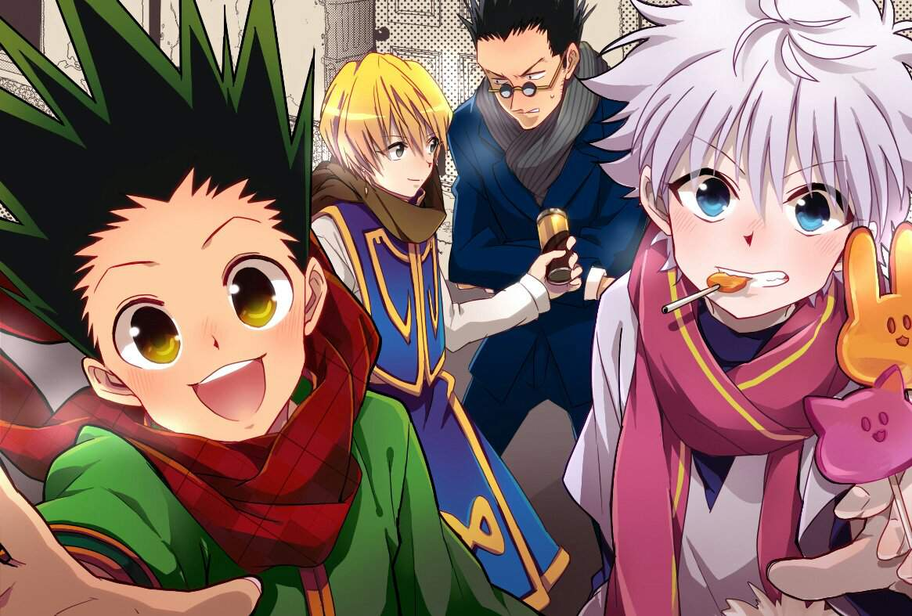

Hunter × Hunter (яп. ハンター×ハンター ханта: ханта:, Охотник на Охотника) — манга Ёсихиро Тогаси. Манга выходит с 8 марта 1998 года в журнале Weekly Shonen Jump, хотя с 2006 года выход часто прерывался на долгие сроки. На конец декабря 2018 года вышло 390 глав и 37 томов.Действие происходит в мире, оформленном в антураже современности и населённом людьми и волшебными животными. В этой вселенной есть профессия Охотника: они занимаются преследованием труднодостижимых целей, к примеру, поиском редких видов животных, несметных сокровищ, исследованием неизведанных мест или даже поимкой опасных преступников. Главный герой манги, Гон Фрикс, узнаёт, что его давно пропавший без вести отец жив и является одним из самых могущественных Охотников мира. Чтобы найти своего отца, Гон решает пройти экзамен и самому стать Охотником. Во время своих путешествий Гон заводит новых друзей и сталкивается с ужасными врагами.В 1999 году Hunter × Hunter был адаптирован студией Nippon Animation в 62-серийный аниме-сериал. Выходил он на телеканале Fuji TV по 2001 год. Затем с 2002 по 2004 выходили три отдельные OVA общей протяжённостью в 30 серий, являющиеся прямым продолжением адаптации 1999 года и по сути являющиеся её частью. Второй сериал по манге был создан студией Madhouse и транслировался на телеканале Nippon Television с октября 2011 года по сентябрь 2014 года. В 2013 году вышли два полнометражных фильма от той же студии: Hunter × Hunter: Phantom Rouge и Hunter × Hunter: The Last Mission.Манга была тепло встречена как читателями, так и критиками. Она является одной из самых успешных в истории издательства Shueisha: на момент февраля 2013 года продано более 65,8 млн томов.
Действие происходит в фантастическом мире, выполненном в антураже современного мира и населённом волшебными животными. География этого мира представляет собой земные континенты с изменённым местоположением, но они располагаются в огромном озере, которое находится на Тёмном континенте, невероятно огромном и опасном месте. В этом мире существует некая организация Охотников, которые занимаются самыми разными вещами: от поиска сокровищ и редких видов животных до наёмных убийств. Их лицензия дает им множество привилегий — возможность бесплатно путешествовать первыми классами различных видов транспорта, доступ к закрытой для других людей информации и право брать крупные суммы денег в банках. Из-за этого довольно много желающих стать Охотниками, поэтому ежегодно проводится экзамен, на котором выбираются те немногие, кто действительно достоин быть Охотником. Охотник может быть награждён тремя звёздами: одной — за особые достижения в своей сфере, второй — за получение официального поста, и третьей — за особые достижения в нескольких сферах. Существуют так называемые Зодиаки — двенадцать сильнейших Охотников, каждый из которых носит титул животного из китайского гороскопа.Охотники должны обладать Нэн (яп. 念) — техникой управления собственной аурой, или жизненной энергией, излучаемой в небольших количествах всеми живыми существами. Профессиональные Охотники должны уметь применять Нэн, поэтому после основного экзамена все сдавшие его проходят дополнительный. Есть четыре основные техники Нэн:
Всего у Хацу есть шесть видов. Каждый пользователь Нэн может быть предрасположен к одному из них, но при этом он может освоить техники и других видов, тем не менее, они будут не настолько эффективными, как техники вида Нэн, к которому предрасположен пользователь. Предрасположенность к определённому типу Хацу определяется также характером пользователя. Для определения принадлежности к той или иной группе проводится определенный тест, называемый гаданием на воде. В сосуд наливается чистая вода, а на неё кладут лист какого-либо растения. Затем к сосуду подносят руки и воздействуют на него силой Рэн. В зависимости от реакции воды или листа и определяется тип Хацу, к которому наиболее предрасположен гадающий.
Чтобы усилить своё Нэн, зачастую пользователи Нэн придумывают определённые условия, без которых способность сработать не может. Чем строже ограничения у способности, тем сильнее она становится.
Главный герой, Гон Фрикс, живёт со своей тетей Мито и бабушкой на Китовом острове. Как говорит Мито, родители Гона давно умерли. Когда ему было 10 лет, Гон неосторожно заходит на территорию дикого животного — лисомедведя. Его спасает внезапно появившийся мужчина, который убивает разъярённое животное. Этого мужчину зовут Кайт, и он Охотник. Кайт рассказывает Гону, что он ищет своего учителя. Как оказалось, этот учитель — это отец Гона, Джин Фрикс, один из величайших Охотников, который, вопреки словам Мито, жив и здоров. Гон решает пойти на экзамен и, став Охотником, заняться поисками своего отца. Но принимать участие в экзамене могут только достигнувшие двенадцатилетнего возраста, поэтому в течение двух лет Гон усердно тренируется, и, когда ему исполняется 12, он отправляется в своё путешествие. На экзамене Гон находит себе друзей: Курапику, последнего из клана Курта, который собирается отомстить преступной организации «Труппа теней» за истребление своего клана и вернуть «алые очи», красотой которых славится его клан и которые были вырезаны из тел его родственников и распроданы по всему миру, Леорио Паладинайта, студента-медика, убеждённого, что деньги правят миром, и мечтающего разбогатеть и стать врачом, чтобы лечить бедных, и Киллуа Зольдика, сверстника Гона, члена знаменитой семьи наёмных убийц, не желающего наследовать семейное ремесло. На экзамене Гон с друзьями встречают также Хисоку, зловещего фокусника-убийцу, которого чем-то привлекает Гон. Экзамен представляет из собой серию жёстких испытаний на выживание, смекалку и командную работу. Заканчивается экзамен турниром, где тот, кто ни разу не победил, не сдаёт экзамен. Гон, Курапика, Леорио и Хисока успешно сдают его, однако Иллуми, манипулируя своим младшим братом Киллуа и желая заставить его вернуться в свою семью, провоцирует у него состояние аффекта и заставляет его убить одного из кандидатов в Охотники, поэтому Киллуа дисквалифицирован. Иллуми заставляет Киллуа вернуться в особняк семейства Зольдиков, но Гон, Курапика и Леорио после окончания экзамена вызволяют его оттуда.
Затем четверо друзей расстаются, договорившись встретиться 1 сентября в городе Йоркнью на аукционе: Леорио отправляется учиться на врача, Курапика — искать глаза своих родичей, а Гон и Киллуа решают потренироваться, а заодно и заработать денег, на Небесной арене, небоскрёбе, где сотни бойцов участвуют в турнирах по боевым искусствам ради богатства и славы. Участвуя в боях, Гон и Киллуа встречают мастера боевых искусств Винга, который обучает двух начинающих Охотников основам Нэн. Выясняется, что Винг — Охотник, и что обучение основам Нэн является завершением экзамена на Охотника. На арене Гон сталкивается с Хисокой, но проигрывает ему.
Гон и Киллуа узнают о невероятно редкой и дорогой компьютерной игре Greed Island, которую разработал Джин с использованием своих способностей Нэн, и, надеясь, что в игре может содержаться подсказка о том, где может сейчас находиться Джин, отправляются в Йоркнью и вместе с Леорио пытаются заработать денег, чтобы купить игру на ежегодном крупном аукционе. Тем временем Курапика устраивается на работу телохранителем Неон Нострад, дочки мафиози, способной предсказывать будущее. Неон коллекционирует необычные части человеческих тел, а на аукционе выставлены глаза клана Курта, поэтому Курапика и решил подобраться к ним поближе. Но внезапно, в первую неделю сентября, объявляется «Труппа теней», которая убивает участников аукциона и крадёт все товары. Начинается гангстерская война между мафией и «Труппой теней», в которую оказываются втянуты четверо главных героев. Курапике приходится столкнуться с важной дилеммой: пожертвовать ли своими новыми друзьями ради мести, или спасти их. Он берёт в заложники Хролло Люцифера, главу «Труппы теней», и отпускает его в обмен на взятых в плен Гона и Киллуа, предварительно наложив на Хролло проклятие с помощью Нэн: если Хролло воспользуется Нэн или свяжется с кем-то из «Труппы теней», то он мгновенно погибнет.
Гону не удаётся купить копию Greed Island, однако ему удаётся наняться к одному мультимиллионеру, который обещает вознаградить всякого, кто пройдёт игру. Начиная играть в игру, Гон и Киллуа попадают в её мир, однако «Труппа теней», тоже начавшая играть в неё по неизвестным причинам, приходит к выводу, что остров, являющийся игровым миром, расположен где-то в реальном мире. В игре нужно собрать около сотни карт с различными эффектами, выполняя различные задания и квесты. Игроки объединяются в союзы, чтобы пройти игру вместе, но объявляется некий Подрывник со своими подручными, шантажом добывающий карты и жестоко убивающий игроков, взрывая их с помощью Нэн. Гон и Киллуа поначалу не справляются со сложностью игры, однако встречают могущественную Охотницу по имени Бискит Крюгер, которая продолжает обучение Гона и Киллуа боевым искусствам, начатое Вингом. Во время тренировки Киллуа ненадолго выходит из игры, чтобы сдать экзамен и получить лицензию Охотника. Чтобы получить последнюю карту, недоступную Подрывнику и его подручным, Гон, Киллуа и Биски просят помощи у Хисоки и с его помощью выигрывают карту у Резора, друга Джина, одного из разработчиков Greed Island и ныне гейммастера этой игры. Подрывник хочет отнять карты у Гона и его друзей, однако, разработав стратегию, Гон, Киллуа и Бискит побеждают Подрывника и его сподвижников, получают последние карты и проходят игру. Тем временем выясняется, зачем Хисока и «Труппа теней» играла в Greed Island: Хролло нанял Хисоку, чтобы тот передал непрямое послание «Труппе теней» и нашёл того, кто мог бы снять с него проклятие, и один из игроков был в состоянии это сделать. Так как прошедшему игру в награду позволяется взять три любые карты из игры, Гон и Киллуа используют две из них, чтобы оказаться у Джина, но их переносит к Кайту.
Встретив Кайта, Гон и Киллуа решают ему помочь в его исследованиях. Они находят лапу гигантского насекомого, которое оказывается муравьём-химерой. Королева муравьёв-химер, пожирая представителей других видов, способна передавать признаки существ, которые были ей съедены, своему потомству. Были известны случаи, когда муравьи-химеры разрушали таким образом целые экосистемы. В этом случае королева, которая объявилась в стране НЗЖ (Нео Зелёная Жизнь), где запрещены современные технологии, оказалась размером с человека и начала есть людей, передавая признаки людей муравьям-солдатам. Муравьи-солдаты начали массово убивать людей и животных и скармливать их ненасытной королеве. Королева имеет цель родить короля, который, обладая невиданной силой, может основывать новые муравейники. Кроме короля, королева должна родить королевскую стражу, которая также невероятно сильна и находится в подчинении короля. Во время исследований Гон, Киллуа и Кайт подбираются ближе к муравейнику, однако Неферпиту, муравей-химера из королевской стражи, серьёзно ранит Кайта, и Гону и Киллуа остаётся бежать. Неферпиту жестоко убивает Кайта и, управляя его телом с помощью Нэн, использует его для тренировок, а Гон и Киллуа, не подозревая об этом, возвращаются в город и тренируются там под началом Бискит, чтобы председатель ассоциации Охотников, Нетеро, счёл их достаточно сильными, чтобы совершить нападение на муравьёв и спасти Кайта. Тем не менее, друзьям это не удаётся, и через два месяца после убийства Кайта Гон узнаёт, что телом Кайта кто-то управляет, и загорается жаждой мести. Тем временем королева рожает короля, которому даёт имя Меруэм, но погибает от ран, полученных при родах. Меруэму абсолютно всё равно, жива ли его мать или нет, и, взяв с собой королевскую стражу, покидает муравейник, захватывает Республику Восточного Горто и убивает её лидера, а Неферпиту манипулирует его телом и таким образом управляет всей страной. Король решает из всего населения Восточного Горто в пять миллионов человек отобрать наиболее способных к Нэн, чтобы сделать их частью своей армии для завоевания мира, а остальных жителей просто сделать едой для муравьёв.
Гон и Киллуа всё же взяты на миссию по уничтожению короля, чтобы отомстить Неферпиту. Нетеро должен взять на себя короля, пока Гон, Киллуа и ещё четыре Охотника отвлекают внимание королевской стражи. Король тем временем увлекается логическими играми, к примеру, шахматами, сёги и го, но, когда ему рассказывают о том, что в Восточном Горто есть игра гунги, подобная шахматам, король проявляет к ней интерес. Король знакомится со слепой девушкой по имени Комуги, которую он никак не может обыграть в гунги. Король начинает понимать людей и, сам того не подозревая, привязывается к Комуги и становится гуманнее. Во время миссии выясняется, что муравьи передают своему потомству не только гены, но и души вместе с воспоминаниями тех, кого они съели. Начинается битва Охотников и стражи. Гон, узнав от Неферпиту, что Кайт мёртв, в ярости с помощью Нэн превращается в более взрослую форму самого себя и убивает Неферпиту, однако из-за условий для трансформации и сам оказывается при смерти. Нетеро проигрывает битву с Меруэмом, однако активирует ядерную бомбу, встроенную в его сердце, и отравляет Меруэма «ядом» от бомбы, тем самым обеспечивая ему неминуемую смерть. Меруэм решает провести последние моменты жизни вместе с Комуги, и вместе они погибают от яда.
После того, как была решена проблема с муравьями-химерами, перед ассоциацией Охотников встал вопрос о назначении нового президента. Начинаются выборы по системе, предложенной Джином Фриксом и принятой остальными Зодиаками. Тем временем Киллуа просит свою младшую сестру Аллуку вылечить Гона, который находится в критическом состоянии после своей трансформации во время битвы с Неферпиту. Зольдики не хотят, чтобы Киллуа уводил Аллуку, так как боятся, что при использовании её сил в качестве побочного эффекта они и сами могут погибнуть, однако Киллуа знает, как обойти эту проблему, и Аллука лечит Гона, а затем Киллуа запрещает ей пользоваться своими способностями, чтобы она могла жить нормальной жизнью. Выздоровев, Гон встречается с Кайтом, переродившимся в виде девочки-муравья-химеры и, наконец, ему удаётся себя простить за то, что он не смог спасти Кайта от Неферпиту. После этого Гон встречается с Джином и расспрашивает его о том, почему Джин решил стать Охотником, а затем отец и сын долго рассказывают друг другу о своих приключениях. Оказывается, что Гон потерял способности к Нэн, поэтому он остаётся дома на Китовом острове, а Киллуа отправляется в странствие вместе с Аллукой.
Некоторое время спустя сын Нетеро, Бейонд, устраивает экспедицию на Тёмный континент, дикое, неизведанное место, которое намного больше известного людям мира. Спонсором экспедиции выступает королевство Какин. Опасаясь, что эта экспедиция спровоцирует огромные бедствия, как после прошлой экспедиции, пять сильнейших политических сил мира позволяют Какину присоединиться к их организации в обмен на то, что все страны-члены организации имеют равное право пользоваться открытиями. Вместо Паристона и Джина, ушедших с поста Зодиаков, их место занимают Курапика и Леорио. Зодиаки решают следить за Бейондом, чтобы тот не сделал ничего опрометчивого.
Манга выходит в Журнале Weekly Shonen Jump с 1998 года, её общий тираж по состоянию на 2011 год превышал 52 000 000 экземпляров[1]. Между публикациями в журнале новых глав манги периодически происходят длительные перерывы, связанные с болезнью мангаки.Согласно опросу, проведенному в 2007 году министерством культуры Японии, Hunter x Hunter занимала 21-е место среди лучшей манги всех времен.[2]
Аниме является экранизацией первых семнадцати томов манги и примерно половины восемнадцатого. Сериал был сделан студией Nippon Animation и транслировался в Японии на телеканале Fuji TV с 16 октября 1999 по 31 марта 2001. Затем вышли три OVA, являвшиеся продолжением сериала. По сути, OVA и сериал можно объединить в одно аниме из 92 серий.Второй сезон повторение первого до 76 серии.В 2011 году Madhouse объявила о создании ремейка основного сериала. Её режиссёром выступает Хироси Кодзина. Трансляция началась 2 октября 2011 года. Окончание 3 OVA оригинального сериала (Greed Island) соответствует 75 серии ремейка.